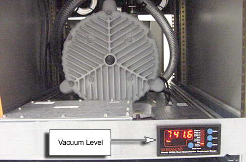
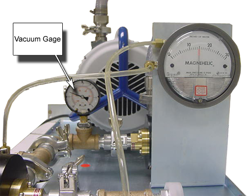

Operating Documentation
Direction 5133315-3, Rev# 14
Signa EXCITE HD 1.5T Service Methods
Module Version 1.0, Version Date 5/15/07
Operating Documentation |
This procedure checks the integrity of the TwinSpeed vacuum components.
| NOTE: | There are two vacuum system configurations. In January 2005 the solenoid system was replaced with redundant vacuum regulators. There are 2 methods of checking vacuum level. |
1. Remove the front cover of the TAC cabinet. Verify the vacuum level is between 140 Torr and 190 Torr. See Illustration 1.
Illustration 1: Vacuum Gage In TAC Cabinet

2. If the vacuum level is above 190 Torr, check for leaks. (Insert link to vacuum troubleshooting document 70437).
3. If the vacuum pump is not able to maintain proper vacuum level, the Tip Seal may need to be replaced.
1. Open the rear door of the TAC cabinet. Verify vacuum gauge is reading –20 inches of mercury. See Illustration 2.
Illustration 2: Vacuum Pump

2. If the vacuum level is greater than x, troubleshoot the vacuum system.
3. If the vacuum pump is not able to maintain proper vacuum level, the Tip Seal may need to be replaced.